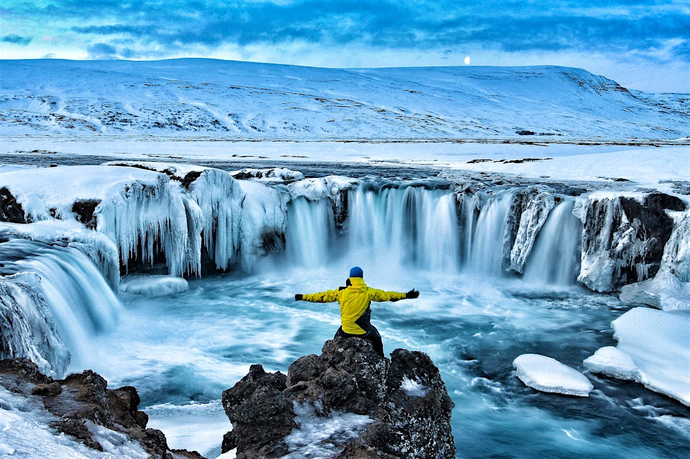
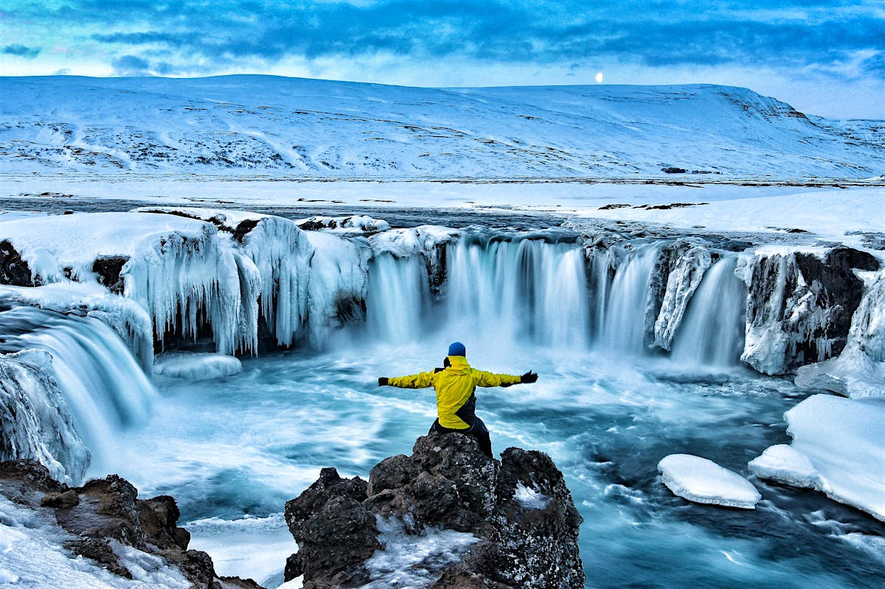
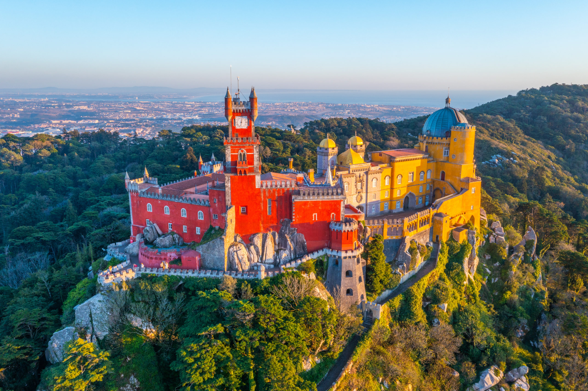

1. Исландия
Рекомендовано: Джоном Гари
Неудивительно, что Исландия остаётся в топе для одиночных путешественников. Пейзажи этой страны уникальны, от водопадов до вулканов. Кроме того, она одна из самых безопасных стран в мире.


Редакция Акжана
11 декабря 2024
Фото предоставлено: noname
Идея путешествовать в одиночку может показаться пугающей, но, как только вы осмелитесь, мир откроется с новой стороны. От исследования известных достопримечательностей до поиска уединённых местных секретов, одиночное путешествие может быть не только увлекательным, но и трансформирующим опытом.
Рекомендовано: Джоном Гари
Неудивительно, что Исландия остаётся в топе для одиночных путешественников. Пейзажи этой страны уникальны, от водопадов до вулканов. Кроме того, она одна из самых безопасных стран в мире.
Рекомендовано: Кларой Мендес
Сочетание культуры, кухни и приветливых местных жителей делает Португалию идеальной для тех, кто ищет комфортное путешествие.
